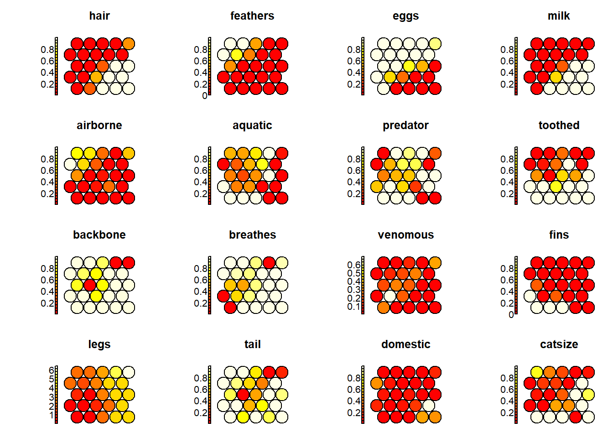
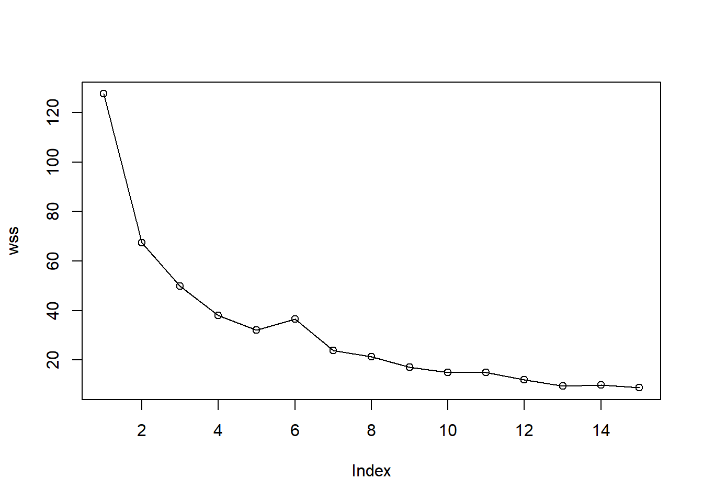
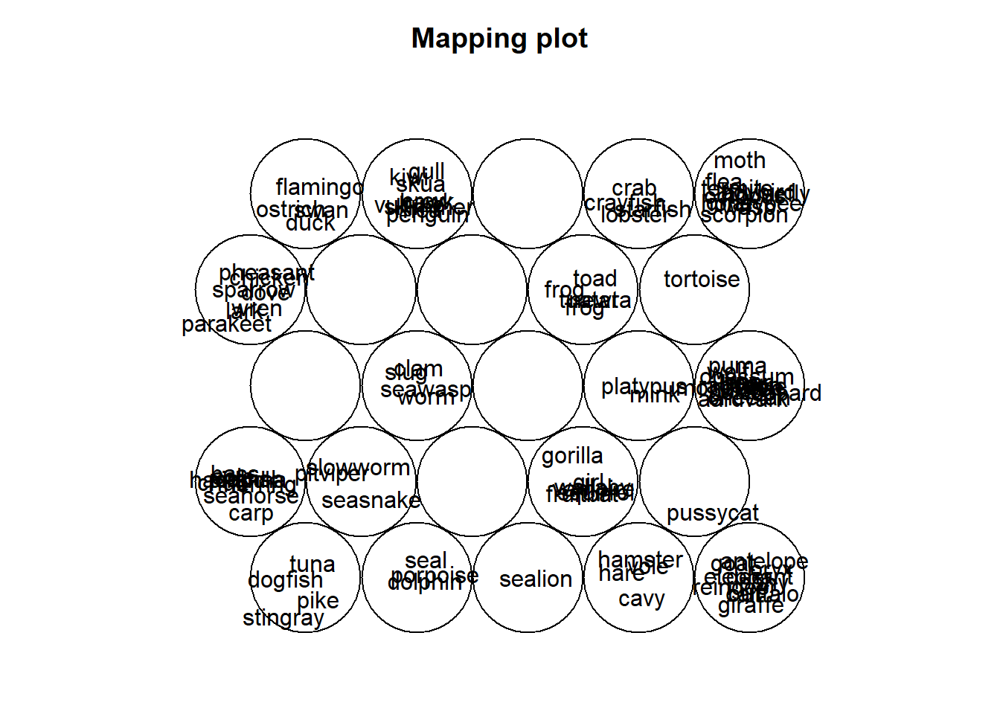
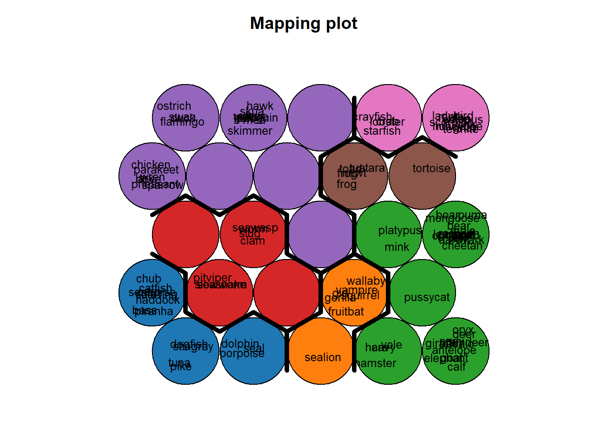

Chapter 5 plot these results:
plot(som_model, type="mapping", labels=animals$name,
main = "Clusters", cex = .5)
add.cluster.boundaries(som_model, som_cluster)
5.1 add background colors to units according to their predicted class labels
pretty_palette <- c("#1f77b4", '#ff7f0e', '#2ca02c', '#d62728', '#9467bd', '#8c564b', '#e377c2')
plot(som_model, type="quality")

plot(som_model, type="mapping", labels=animals$name,
bgcol = pretty_palette[som_cluster], cex=.8)
som_model$unit.classif## [1] 15 5 6 15 15 5 5 6 6 4 15 16 6 12 24 24 22 5 1 2 16 21 5 21 25
## [26] 19 19 9 5 9 25 5 9 22 6 4 4 22 6 25 25 22 25 16 15 15 24 15 14 15
## [51] 15 25 19 25 15 5 21 16 22 16 1 6 7 14 15 5 2 15 10 15 5 22 25 6 2
## [76] 3 7 12 22 22 7 12 6 16 9 24 1 21 25 19 20 19 1 9 4 22 9 25 15 12
## [101] 16
# get vector with cluster value for each original data sample
cluster_assignment <- som.hc[som_model$unit.classif]
# for each of analysis, add the assignment as a column in the original data:
animals$cluster <- cluster_assignment
animals$whichnode <- som_model$unit.classif
head(animals[,c(1,19,20)],20)## name cluster whichnode
## 1 aardvark 3 15
## 2 antelope 3 5
## 3 bass 1 6
## 4 bear 3 15
## 5 boar 3 15
## 6 buffalo 3 5
## 7 calf 3 5
## 8 carp 1 6
## 9 catfish 1 6
## 10 cavy 3 4
## 11 cheetah 3 15
## 12 chicken 5 16
## 13 chub 1 6
## 14 clam 4 12
## 15 crab 6 24
## 16 crayfish 6 24
## 17 crow 5 22
## 18 deer 3 5
## 19 dogfish 1 1
## 20 dolphin 1 2a=1:25
b=matrix(0,101,2)
for(j in 1:101){
for (i in 1:25){
a[i]=sum((round(som_model$codes[[1]],4)[i,]-som_model$data[[1]][j,])^2)
}
b[j,1] = which.min(a)
a[which.min(a)]=NA
b[j,2] = which.min(a)
}
b## [,1] [,2]
## [1,] 15 10
## [2,] 5 15
## [3,] 6 1
## [4,] 15 10
## [5,] 15 10
## [6,] 5 15
## [7,] 5 10
## [8,] 6 1
## [9,] 6 1
## [10,] 4 5
## [11,] 15 10
## [12,] 16 17
## [13,] 6 1
## [14,] 12 11
## [15,] 24 19
## [16,] 24 25
## [17,] 22 17
## [18,] 5 15
## [19,] 1 6
## [20,] 2 8
## [21,] 16 17
## [22,] 21 17
## [23,] 5 15
## [24,] 21 16
## [25,] 25 24
## [26,] 19 23
## [27,] 19 23
## [28,] 9 13
## [29,] 5 15
## [30,] 9 3
## [31,] 25 24
## [32,] 5 10
## [33,] 9 13
## [34,] 22 17
## [35,] 6 1
## [36,] 4 5
## [37,] 4 5
## [38,] 22 17
## [39,] 6 1
## [40,] 25 24
## [41,] 25 24
## [42,] 22 17
## [43,] 25 24
## [44,] 16 17
## [45,] 15 10
## [46,] 15 10
## [47,] 24 25
## [48,] 15 10
## [49,] 14 15
## [50,] 15 4
## [51,] 15 10
## [52,] 25 24
## [53,] 19 23
## [54,] 25 24
## [55,] 15 4
## [56,] 5 15
## [57,] 21 17
## [58,] 16 17
## [59,] 22 18
## [60,] 16 17
## [61,] 1 6
## [62,] 6 1
## [63,] 7 11
## [64,] 14 15
## [65,] 15 10
## [66,] 5 10
## [67,] 2 8
## [68,] 15 10
## [69,] 10 15
## [70,] 15 10
## [71,] 5 10
## [72,] 22 17
## [73,] 25 24
## [74,] 6 1
## [75,] 2 8
## [76,] 3 9
## [77,] 7 6
## [78,] 12 7
## [79,] 22 17
## [80,] 22 17
## [81,] 7 11
## [82,] 12 11
## [83,] 6 1
## [84,] 16 17
## [85,] 9 13
## [86,] 24 19
## [87,] 1 6
## [88,] 21 22
## [89,] 25 24
## [90,] 19 23
## [91,] 20 23
## [92,] 19 23
## [93,] 1 6
## [94,] 9 13
## [95,] 4 5
## [96,] 22 21
## [97,] 9 3
## [98,] 25 24
## [99,] 15 10
## [100,] 12 11
## [101,] 16 17